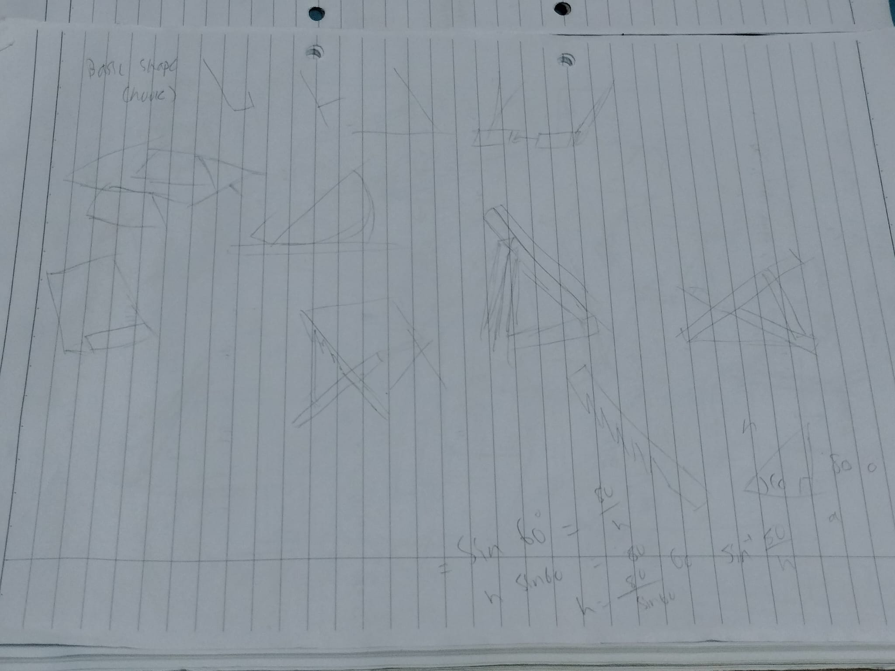
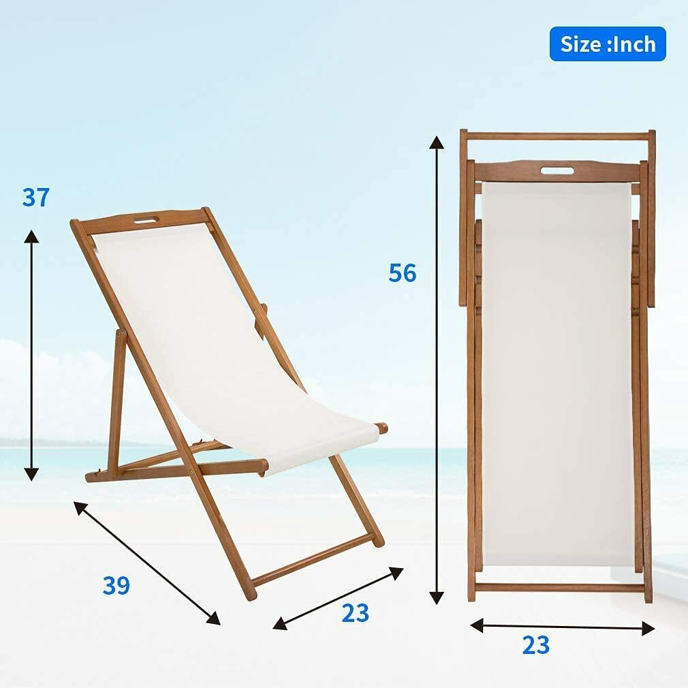
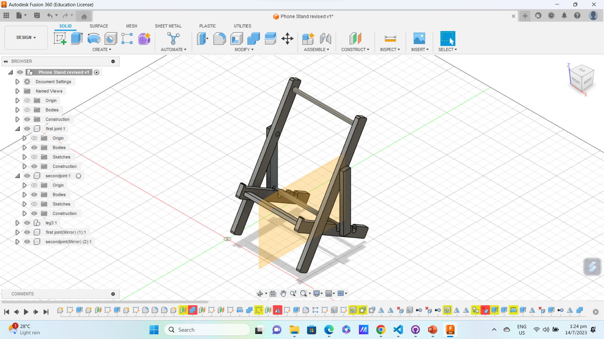
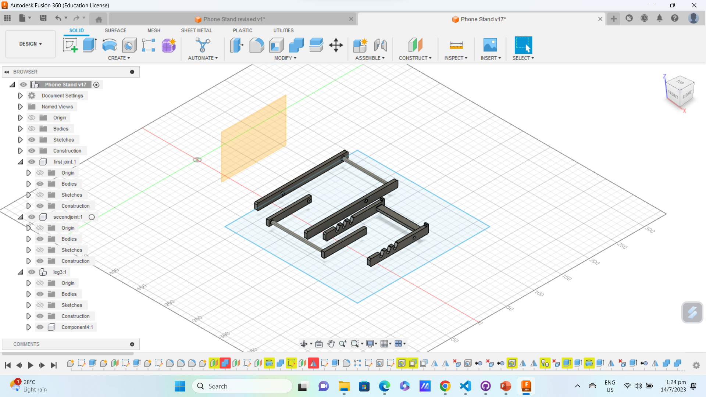
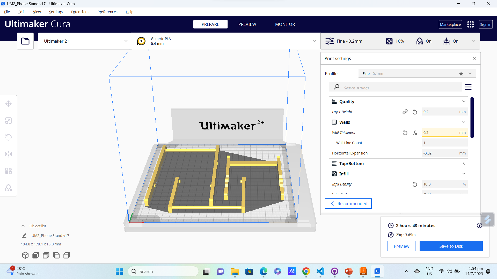
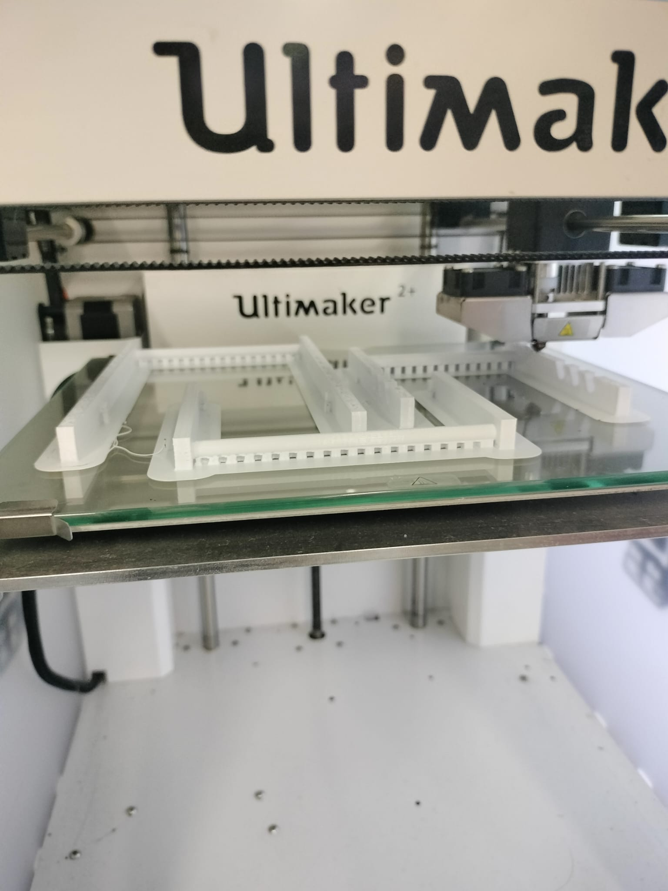
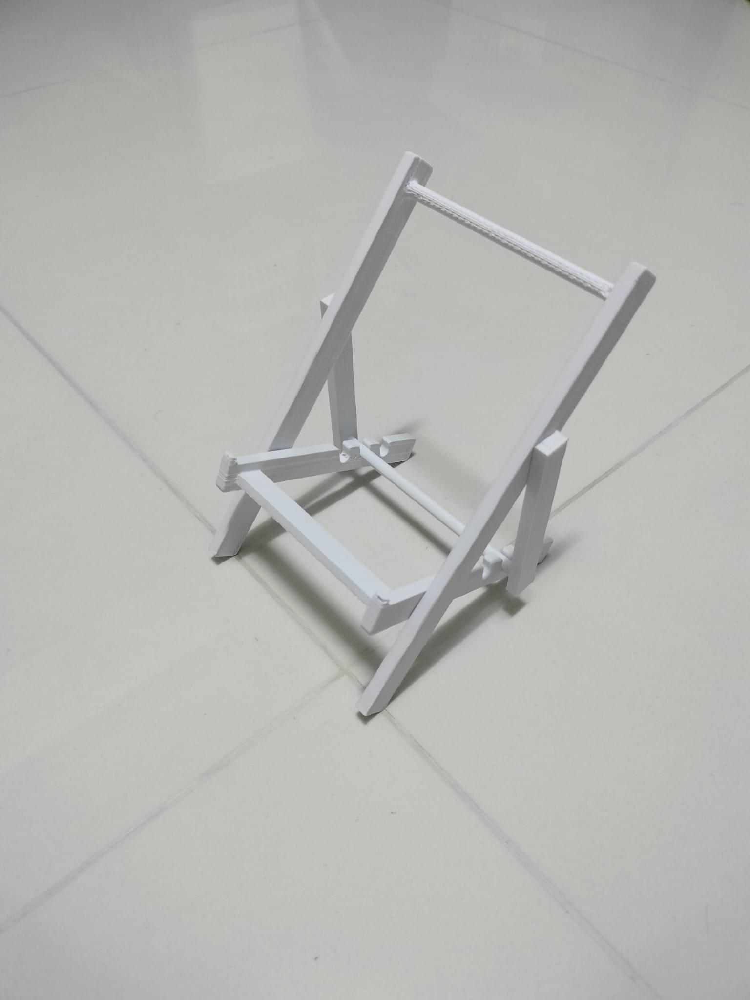
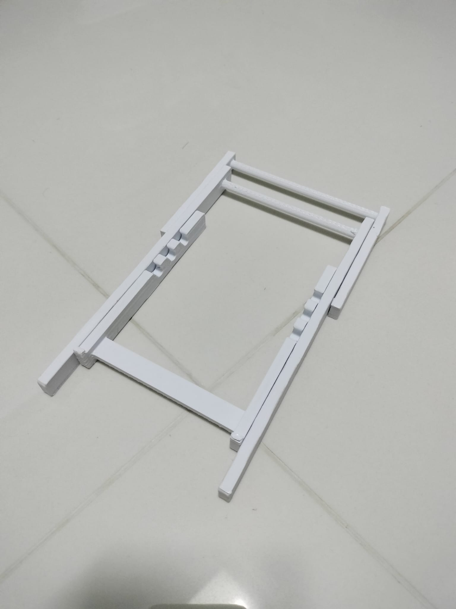

3D printing
- What is 3D printing? Simply put, 3D printing, also known as Additive Manufacturing, is a form of manufacturing which can produce 3-dimensional objects from a digital 3D model.
- How does it work? Well, 3D printing, as its other name suggests, creates models by adding or depositing material layer by layer. This can be done using different methods, ranging from the use of extruding filament to curing resin. Filament printers are one of the most common forms of 3D printers used.
Assignment 1
- 3D printing a handphone stand
- For this assignment, we are required to design a phone stand. In terms of design, wanted something that is slightly more unique that is unlike the usual blocks that are phone stands.
- The design phase was a bit of a challenge. Since I basically rejected the idea of a block as a stand, I needed another shape that can serve the same purpose. After trying to look for inspiration, I got inspired by a very unlikely source, my grandparents' chairs.
- Yes, chairs. Granted, it isn't as original per se since chair shaped stands exist but I'd figured that it was unique enough.
Designing
- To get a clear idea of what we want, we are going to sketch out the general concept on paper and work from there.
- Attached below is a basic sketch of the design. The general premise of the design is a folding / adjustable chair similar to a lawn chair, sans the armrests since we are also going to mount the phone horizontally.
- The idea is further improved after looking at more foldable chairs, and I eventually settled on the concept of a beach chair.
- The reference I used from the internet:
- An intended feature was to "replicate" the fabric portion of the chair with a 3D printed living hinge, but I eventually scrapped the idea when the print failed.
Modelling
- As always, we are going to start modelling in Fusion. One feature we are going to use is "components", where we can work on each part separately.
- After modelling each component, we can now prepare the model for printing. Using the "Arrange" feature we used in the Laser Cutting assignment, we can lay the components flat for printing, then assemble the parts together once printed.
 - This is the second rendition of the model. The first rendition had ball joints for assembly, but unfortunately did not work as some sockets were covered or caved in. I ended up redesigning the joints to simple peg-and-hole ones, and it proved effective enough once printed.
Printing
- Using a slicer, namely Cura, we are able to slice our model into layers for printing. Here in the slicer, we are also able to configure the settings of the printer.
- After slicing, we are now able to transfer the G-code to the SD card of the printer. After inserting the card and selecting the correct file, we can start printing.
- Finally, after assembly, the stand is done. The joints however required some filing and sanding in order to fit due to the uneven surface from the print.
- Since the design is based on a folding chair, it naturally folds up.
- Complete! I honestly did not expect for it to work this well, and it proved strong enough to hold up a phone in both vertical and horizontal orientations. It also reminds me of an easel, and this stand can also be used to hold other items as well, serving a dual purpose.